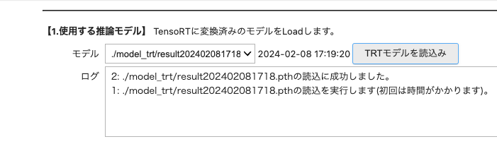
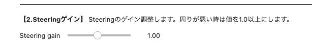
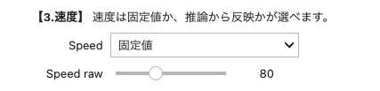
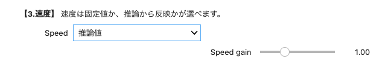
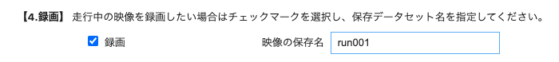
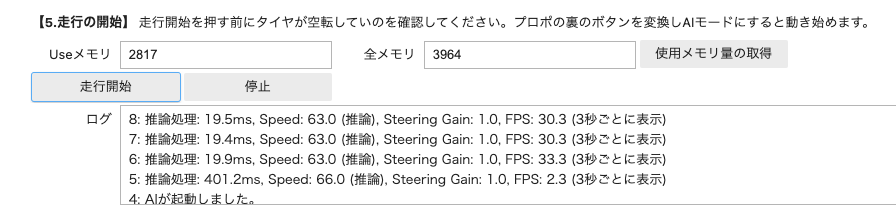
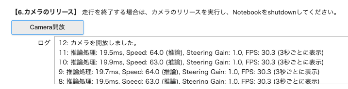
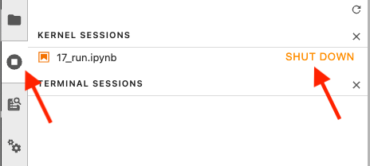
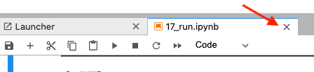

自動走行
解説動画
Info
04_road_following.ipynbの場合は、走行録画データはrunフォルダに蓄積されます。
AI86 Version2の自動走行では、17_run.ipynbを使います。 ステアリングだけでなくスロットルに対しても推論を実行することができます。
セルを順番に上から実行して、shift + Enterキーまたは、▶️ボタンを押していきます。
しばらく経つと以下の画面が現れます。走行したいモデルを選んでTRTモデル読み込みを押します。呼び出しには数十秒かかります。

ステアリングゲインは、実際の走行し、調整します。（初めは１.０がおすすめです。）

スピードゲイン（スロットルのゲイン）は固定値か推論値で選べます。スロットルは一定の場合は、固定値を選びます。こちらも実際走行し、よく走るような値を調整します。

スロットルのアノテーションして学習させた場合は、推論値を選びます。

走行を録画したい場合は、録画にチェックを入れ、ファイル名を記入します。

RCモード（グリーン点灯）になっていることを確認して、走行開始ボタンを押します。しばらく経つと、AIが起動し下記のようなログが現れます。プロポにあるボタンを押してAIモード（ピンク、レッド点灯）にします。RCカーの制御信号がプロポからJetsonに切り替わり自動走行します。走行が終了したい場合は、プロポのボタンを押して、RCモード（グリーン点灯）にして車体を停止から停止ボタンを押します。
Info
周囲の安全を確保して走行します。危険を感じた時や車体衝突が起きそうなときはAIモードからRCモードに即座に切り替えして衝突を停止または回避しましょう。

カメラの開放ボタンを押します。

シャットダウンします。

タブも閉じます。

Info
17_run.ipynbでの走行録画データはcameraフォルダに蓄積されます。こちらのデータを元に教師データを追加して再び学習させます。
Info
うまく走れるようにStreeing Gain、Speed rawまたはSpeed Gainを調整してみてください。
Info
走行を改善したいときは、走行録画の画像データより悪い箇所を探し出して再びアノテーションしてモデルを生成してよく走るまで繰り返します。